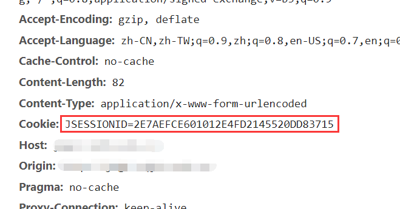
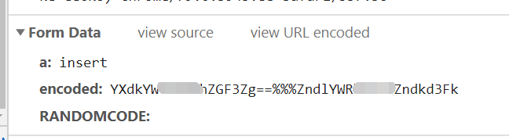
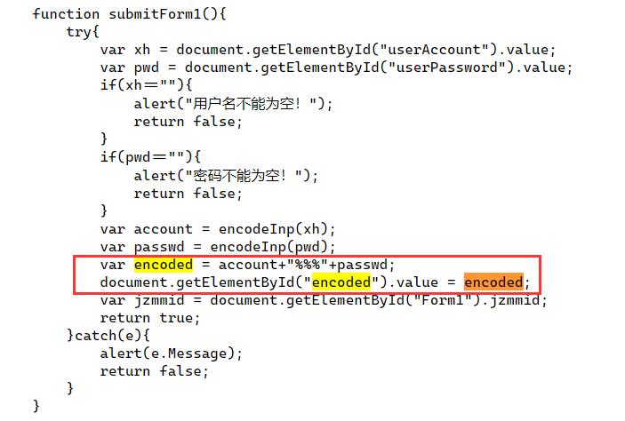
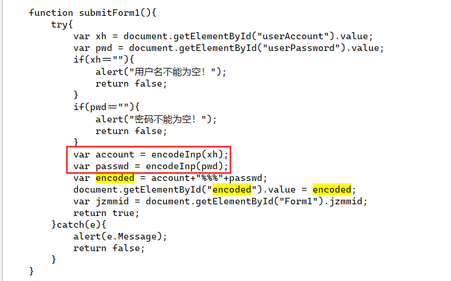
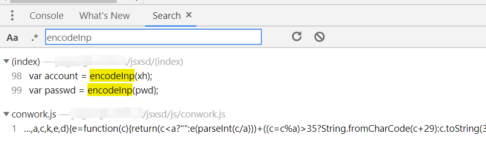
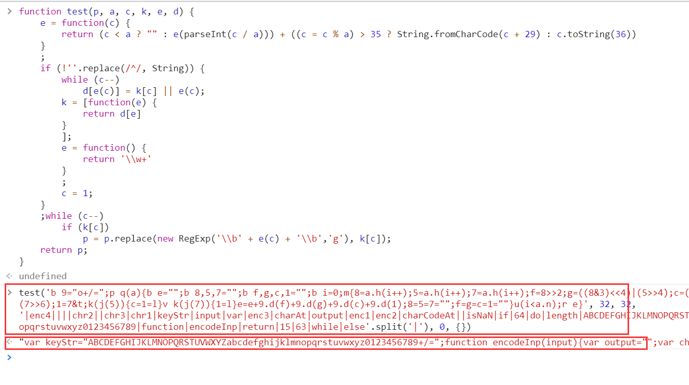
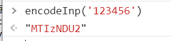

学校教务系统登录前端加密分析
我又无聊了……学校教务系统登录前端加密分析
突然想做一个方便自己的课表程序，课表的数据在教务系统里，所以就想写个爬虫程序，从教务系统里爬取课表。
首先是要通过模拟表单提交，登录进教务系统。
清空Cookies、打开开发者工具、开启网络分析（其实就是抓包）、刷新页面……基本操作，没有什么问题。
分析一下Cookie组成，非常简单，就一个Cookie。

验证码地址也很简单，没有什么奇怪的参数。
1 | Request URL: http://马赛克/jsxsd/verifycode.servlet |
再分析一下表单提交的数据……
居然有加密！这个破系统居然还有加密！

问题不大，登录入口那么重要，有加密也挺正常，先从源代码里找找有没有“encoded”。

一下子就找到了，加密方式是先加密学号、再加密密码，再把密文拼接起来，中间用“%%%”分隔。
而且学号和密码的加密方法是同一种方法，加密函数也一起找到了，就叫做“encodeInp”。

在开发人员工具里按下Ctrl+Shift+F,打开全局搜索，找一找这个叫做“encodeInp”的函数。
很轻松地找到了线索。

这一整个js文件里，就放了这一段代码。
虽然这段代码里没有出现任何“encodeInp”字样，但是凭借我的直觉，并且我相信chrome不出错，这一段就是我要找的代码。
1 | eval(function(p, a, c, k, e, d) { |
这段代码里用到了eval函数，大胆猜测这个“eval”所执行的代码会生成一个名为“encodeInp”的函数。
不然教务系统的js代码不可能成功调用encodeInp这个函数。
进一步观察，不难看出这段代码就是一个匿名函数的调用，而且把函数的定义和函数的调用写在了一起。
给匿名函数取个名字，分离出函数的定义和函数的调用这两个部分。
匿名函数：1
2
3
4
5
6
7
8
9
10
11
12
13
14
15
16
17
18
19
20
21
22
23function test(p, a, c, k, e, d) {
e = function(c) {
return (c < a ? "" : e(parseInt(c / a))) + ((c = c % a) > 35 ? String.fromCharCode(c + 29) : c.toString(36))
}
;
if (!''.replace(/^/, String)) {
while (c--)
d[e(c)] = k[c] || e(c);
k = [function(e) {
return d[e]
}
];
e = function() {
return '\\w+'
}
;
c = 1;
}
;while (c--)
if (k[c])
p = p.replace(new RegExp('\\b' + e(c) + '\\b','g'), k[c]);
return p;
}
函数的调用：1
test('b 9="o+/=";p q(a){b e="";b 8,5,7="";b f,g,c,1="";b i=0;m{8=a.h(i++);5=a.h(i++);7=a.h(i++);f=8>>2;g=((8&3)<<4)|(5>>4);c=((5&s)<<2)|(7>>6);1=7&t;k(j(5)){c=1=l}v k(j(7)){1=l}e=e+9.d(f)+9.d(g)+9.d(c)+9.d(1);8=5=7="";f=g=c=1=""}u(i<a.n);r e}', 32, 32, '|enc4||||chr2||chr3|chr1|keyStr|input|var|enc3|charAt|output|enc1|enc2|charCodeAt||isNaN|if|64|do|length|ABCDEFGHIJKLMNOPQRSTUVWXYZabcdefghijklmnopqrstuvwxyz0123456789|function|encodeInp|return|15|63|while|else'.split('|'), 0, {})
扔到开发人员工具里执行，果然吐出来个encodeInp。

1 | var keyStr = "ABCDEFGHIJKLMNOPQRSTUVWXYZabcdefghijklmnopqrstuvwxyz0123456789+/="; |
那么接下来就有两个选择，一是我的程序嵌入一个JS引擎，执行这段JS代码；二是翻译这段代码，翻译成C++直接用。
这段代码才十几行，变量名也不复杂，嵌入一个庞大的JS引擎去执行它简直是杀鸡用牛刀。
所以我决定翻译这段JS代码。
然而正当我准备翻译，我再仔细观察这段代码……
我总感觉有点熟悉……
这好像是Base64编码？
赶紧去验证一下

果然就是Base64编码！
分析了半天，居然就一个Base64编码！
这破系统也太敷衍了。
学校教务系统登录前端加密分析